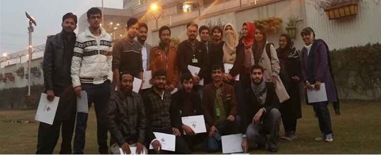

Search Engine Optimization (SEO) is the process of effecting the online visi-bility of a website or a web page in a web search engine’s unpaid result. The speakers of this event were Ms. Samia Hussain & Mr. Muhamad Umair. They gave the participants the tips for best SEO. More than 115 students attended the seminar.
IP NAT/NATP & Port
Ethical Hacking & System Administration
The speaker, Mr. Mansab Choudhary, a Cyber Security Researcher & Hacker and Founder of “Who Got Hacked” one of the Pakistan's top Cyber Security News Website, delivered a seminar on ethical hacking and system administration. The speaker said that an ethical hacker is a computer and networking expert who systematically attempts to penetrate a computer system or network on behalf of its owners for the purpose of finding security vulnerabilities that a malicious hacker could potentially exploit. More than 70 students were present in the seminar
Industrial Trip to MTBC Bagh Office
The students of computing and technology department arranged industrial trip to MTBC Bagh office. MTBC is a healthcare information technology solution provider that offers physicians a comprehensive product portfolio of fully integrated Weber, revenue cycle, practice management solutions, and other related business services. It provided a great opportunity to software engineering students to learn how medical software are developed and optimized for medical industry.

Industrial Trip to Arfa Software Technology Park
On the invitation of Mr. Haroon of Ebryx, the student of computing department visited Arfa Software Technology Park. It was a passionate learning experience for the students in terms of giving them an insight to the real-life working environment in software industry. Arfa Software Technology Park is the country’s largest
Seminar on CMMI vs agile methodologies
Two days’ workshop conduct on 07-02-18to 09-02-2018 for first semester student to tell them the basic of Microsoft that’s help in their stud-ies. Total 50+ student took the advantage of workshop. The speaker of the workshop was senior student of computing department.
Workshop on Microsoft office
Workshop on Python
Python workshop held in abasyn univerty from 02-07-2018 to 06-07-2018. this is the first pahse of workshop where student learn baisc about Python. Speaker was Mr. Asad Hanif (lecturer in abasyn university).
Smart search competition
Today the best Search is valuable to safe time. Total 30 students participate in smart search competition. They have 15 minutes to search the topic “latest technologies in medical field”. The winner of this completion was Basharat Ullah khan. Most respect dean Sher Wali khan give the shield to the winner.
Meeting for upcoming workshop